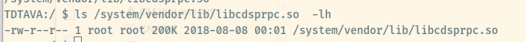

SDK position:
➜ adsp_proc git:(master) ls ~/Qualcomm/
HelloWorld Hexagon_SDK
dsps
The processing units include a Kryo CPU, an Adreno 640, and four separate DSPs, each devoted to a specific application space: sensor (sDSP), modem (mDSP), audio (aDSP), and compute (cDSP).
所以我们的目标是CDSP, compute DSP
tools
➜ 3.5.4 cd tools
➜ tools ls
android-ndk-r19c audio debug elfsigner HALIDE_Tools hexagon_ide HEXAGON_Tools Installer_logs libusb python_venv qaic utils
➜ tools cd
➜ 8.3.07 ls
Documents Examples NOTICE.txt RELEASE_NOTES.txt Tools Uninstall_Qualcomm_Hexagon_LLVM_Tools
➜ 8.3.07 pwd
/home/xxx/Qualcomm/Hexagon_SDK/3.5.4/tools/HEXAGON_Tools/8.3.07
Hexagon apps are started from an app running on the apps processor of the SoC. A RPC mechanism (called FastRPC) is used to load a shared library on the DSP and the RPC stubs are generated from a IDL complier (qaic). The RTOS on the DSP is QuRT but is often abstraced by the DSPAL APIs.
/system/vendor/lib/libadsprpc.so
(or)
/vendor/lib/libadsprpc.so
Shared object library that needs to be linked with the user space vendor application invoking the remote procedure call. This library interfaces with the kernel driver to initiate the remote invocation to aDSP
/system/vendor/lib/libcdsprpc.so
(or)
/vendor/lib/libcdsprpc.so
Shared object library that needs to be linked with the user space vendor application invoking the remote procedure call. This library interfaces with the kernel driver to initiate the remote invocation to cDSP
/system/lib/libadsprpc_system.so
Shared object library that needs to be linked with the user space system application invoking the remote procedure call. This library interfaces with the kernel driver to initiate the remote invocation to aDSP This is applicable only for Android P system applications
/system/lib/libcdsprpc_system.so
Shared object library that needs to be linked with the user space system application invoking the remote procedure call. This library interfaces with the kernel driver to initiate the remote invocation to cDSP This is applicable only for Android P system applications

Error: Error : Emulation hexagonv5 is deprecated in this version of the toolchain
https://zhuanlan.zhihu.com/p/429890621